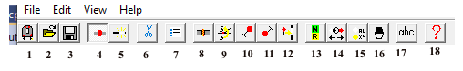

©Bernard S. Greenberg 1997–2022
Updated 17 February 2022
This is the documentation for TLEdit, the NXSYS track layout editor. It is used to create and edit layouts as seen on the interlocking panel. It does not create or edit logic in any way.
Layouts consist of straight line track segments which connect joints, which latter appear in TLEdit as red dots (but do not appear at all in NXSYS). Tracks can only bend or join at joints. A joint can sport one, two, or three segments (“branches”) emanating from it — one is the end of a track, two is an insulated joint, or a “kink” in a track, and three is a switch.
The TLEdit toolbar is central to all operations other than creating track. While the Mac button images are large and clear, the Windows ones are ... less so. Here is the Windows toolbar, with the labelling of each tool. Their meanings are explained below. They do have tooltips.
| 1. Exit (back of a train) 2. Open (an extant layout file) 3. Save 4. Show Joints (nonselected ones, that is) 5. Show Exit Lights 6. Cut 7. Properties dialog 8. Insulate joint 9. Flip switch or IJ number side | 10. Place Signal, northward or eastward 11. Place Signal, southward or westward 12. Create Exit Light at signal 13. Create Auxiliary Switch key 14. Create Traffic Lever knob 15. Create General Panel Light 16. Create General Panel Switch 17. Create text string |
Click and drag mouse left (Windows, or Mac trackpad, single finger) to create a new track segment. Click left on either an extant joint which is not already “full” (i.e., has less than 3 branches), some other point on an extant segment, or elsewhere, and drag the mouse, left button held. You will be dragging the end of a “rubber band”, whose other end is where you started. Drop the mouse on either an extant joint which is not full, some other point on an extant segment, or elsewhere — a new segment will be created. To cancel, i.e., change your mind and create no new segment, drop the mouse end of the rubber band back on the stationary end. Slopes of less than 4% from the vertical or horizontal are assumed to be vertical or horizontal, and “snapped” into place.
To move an extant joint, click and drag it with mouse right (on Windows; control-mouse on the Mac). Clicking and dragging mouse right in the middle of an extant segment creates a joint and moves it — you can insert a “kink” this way. If you drag a joint to another joint, and there are no more than three branches among the two of them, the joints will merge into one. The rubber band lines will “click” onto a detente (and show as red) if TLEdit thinks it knows what you are trying to do.
Placing a new joint in the middle of an extant segment via either tool splits the segment in two at that point. For mouse left, the new joint will not come into existence until you actually drag the mouse. For mouse right, a new joint will come into existence immediately.
Any object (joint, segment, signal, exit light, or switch key) may be selected, which turns it green, by clicking left on it. A newly-created object, or a joint just moved, is automatically selected. Pressing the Edit Properties tool (or typing Ctrl+P, both Windows and Mac) when an object is selected brings up its properties dialog, which is different for each type of object, allowing detailed control of its properties. On the Mac, “secondary gesture” (right-click replacement) on any object calls up its properties dialog, too.
Cut (use the Cut tool or Ctrl-X, ⌘X in the Mac) to delete a selected object. Loose ends of a deleted segment will vanish with it. Cut of a selected joint of two branches will remove the joint and collapse the two segments into one, joining the endpoints of the previous two. You must delete all signals and exit lights at an insulated joint before the joint can be deleted. There is presently no undo or paste.
A joint of two branches can be made insulated by selecting it and clicking the Insulate tool (insulated joints appear as yellow dots.) Creating a signal at an uninsulated joint of two branches it insulates the joint automatically.
Scroll down or to the right to extend layout those ways. To extend up or to the left, use View|Shift Layout (Alt+S on Windows, no accelerator on Mac). This takes much time to run. To set the default view origin that comes up in NXSYS, scroll until you are looking at it, and use View|Set Viewport here.
The problem of how to establish an empty space of known dimensions, or “large enough” on the Mac is non-obvious, and discussed in the Mac-specific TLEdit help file..
To create a signal: Select any joint of 1 or 2 branches (i.e., not a switch), or make one with mouse right. Choose the one of the two Create signal with the closer of the two orientations (If you guess wrong, cut it and try again). Signals move around as you move the joint. Click right on a signal calls up its properties dialog, which allows editing or assignment of lever numbers, lenses, absence of stop, etc. Station Number is the decimal number that will be used to identify relays associated with the signal and from which the signal ID plate will be computed. IRT and BMT/IND conventions for choosing this differ. Select and Cut to delete a signal.
To create an (entrance/)exit light: Exit lights can be created by selecting a signal and clicking the Create or Select Exit Light tool to create an exit light for exiting at that signal. Normally, exit lights, other than a selected one, including one just created, are hidden. To show all exit lights, toggle the Show/Don't Show Exit Lights tool; they can only be clicked for cutting or properties (lever number) editing when lit. To create a same-direction exit (when there is no signal in the entrance direction), create such a signal, create its exit light, and delete the signal. Exit lights, when created, inherit the lever number, if any, of their signals.
Insulated joint station numbers and switch numbers can be assigned via the joint’s properties dialog. All insulated joints and switch joints are automatically assigned unique numbers (to facilitate reload) over 10000, which do not display on the panel. Set them as you want via the dialog. You can “flip” IJ station numbers and switch numbers between sides of the track (to address visual collisions) with the Flip Numbers tool.
Auxiliary switch keys are created by pressing the tool that resembles one: move the mouse to the final position, and click left to drop it there. Type any character or click right to abort. To edit a key’s switch number or board position, click right on it or use the properties dialog tool. To move one, select it first, release the mouse button, and then click and drag left to a new position. Select it and Cut to destroy it.
Traffic levers and generic panel switches and lamps are created with the three tools that resemble them. Creation and property editing is identical to that for auxiliary switch keys (above). Traffic lever graphics in-line with track is not supported yet; use arbitrary text to label to taste. “Normal” direction (left or right — affects relay nomenclature and initial state) is set from the properties dialog.
Arbitrary text strings of any size or font are created by pressing the tool labelled “abc”: move the mouse to the final position, click left to drop. Dragging/moving, selection, destruction, and editing is the same as for auxiliary switch keys. Click right or use the properties tool to set text content, font, size. etc. Don’t use private fonts not likely to be on someone else’s machine.
Track segments assemble into track sections (track circuits); NXSYS generates and manages T relays and "line-o-lite"s on a per-circuit basis. Select and property edit a track segment to assign a numeric track circuit relay ID. If Wildfire spread by contact is selected, all track segments reachable from the one being edited without passing an insulated joint will have their Circuit ID's changed as well. NXSYS will not equip a track segment with the default ID (0). Track segments with circuits assigned light with white "line-o-lites" in TLEdit. The algorithm for managing segments dependent on switch position, within one circuit, is a complex heuristic built into NXSYS (which occasionally fails). Individual segments are not “programmable” as they are in real life.
TLEdit by default assigns the three branches emanating from a switch joint the designations stem, normal, and reverse, based upon the angles between them. In some cases, notably for slip switches, this default is not correct. The two buttons highlight normal and swap normal on the switch’s properties dialog can be used to see which branch is “normal” (selecting it) and swap the definitions of normal and reverse (highlighting the new normal, as it were) to facilitate manual adjustment.
========================================================================
Use Ctrl-W (or New) to “wipe” the drawing clear, on Windows, but ⌘N (New) on the Mac.
Use the Show joints tool (an on/off button) to see what the panel will look like on NXSYS (i.e., no red dots).
You can save and restore your creations. The app will accept a file name as a command argument.
You can (include "foo.trk") in an NXSYS .trk file. The outer file should contain, or co-include, all the relay definitions and the TLEdit-generated file, which latter should not be hand-edited. (The language is fairly obvious, and is left as an exercise for the user. You should not have to understand its details.)